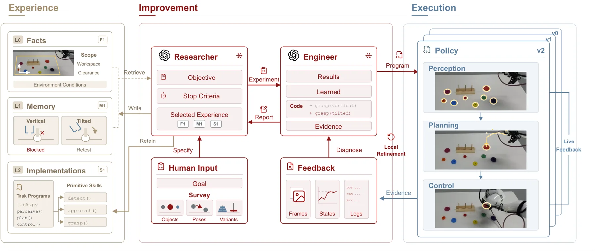
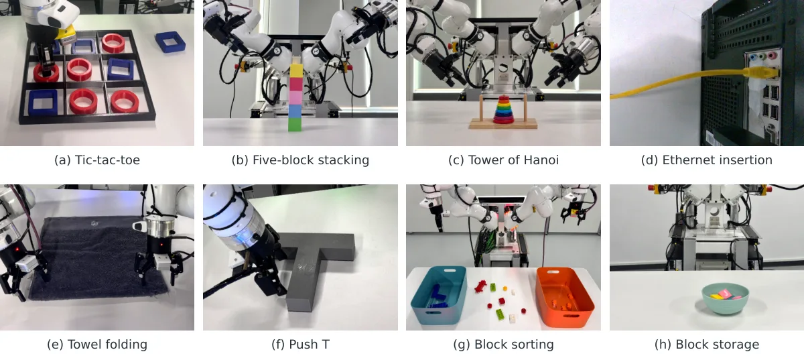
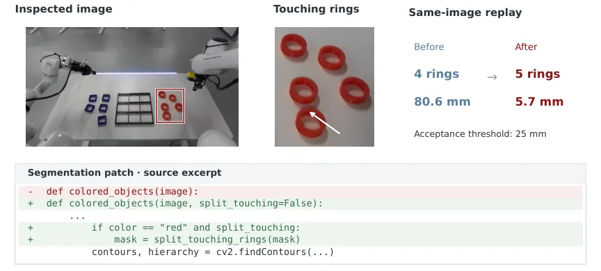

PyRUA-REAL：让编码智能体在真实机器人上把探索经验固化成可复用程序
PyRUA-REAL: Robot Exploration and Adaptive Learning through RSI in the Real World
这是一篇实证研究论文：不改基础模型参数，改进的是代码、技能库与经验库。关键数字：八任务开发期平均 91.1%；RoboDojo 42 任务 84.42%（PyRUA-Lean 50.35%、GPT-6-Astra 22.48%）；反馈形式对照 B 15.3%、BS 45.8%、BVJ 54.2%，且 BVJ 的优化时间更短（25.4 对 31.8 分钟）；显式任务规格使五类能力提升 11.4–36.6 点；带技能库迁移 40.0% 对无库 21.3%；离线执行比在线编码快 4.6–5.0 倍、比在线动作选择快 9.9–11.5 倍。边界也很明确：接触密集的网线插入 0/4 成功，需在线辅助才到 10/17。
real-world success
RoboDojo success
cycle time
skill transfer
作者、单位与技术谱系 · Research context
作者与单位
研究脉络
- PyRUA-Lean方法基座关系：PyRUA-Lean 是同一团队的在线编码模式（部署时写代码并执行），本篇把它作为对照基线，并提出离线编码模式：先开发再冻结，部署不调模型。[论文 4.8 节与图 8]
- Fewer tokens, better action（Si et al., arXiv 2610.01939）团队前作关系：同一团队此前研究 GPT-6-Astra 机器人智能体的 token 效率，本篇延续“代码 + 智能体”的路线，把重点从单次推理效率转到跨试验的经验积累。[arXiv 2610.01939 作者列表]
- CaP-X（Fu et al., arXiv 2603.22435）同期对照关系：CaP-X 是编码智能体做机器人操作的基准与改进框架，本篇与之共享“代码作为策略接口”的前提，但关注长周期的经验固化与部署效率。[论文第 2 节相关工作]
合作网络
- 北京大学 × EngineAI × 新加坡国立大学Peking University → EngineAI / National University of Singapore关系：共同署名[arXiv HTML 机构行]
- Daquan Zhou — Jianxin Bi 共同通讯Daquan Zhou → Jianxin Bi关系：共同署名[arXiv HTML 作者标注]
- PyRUA-REAL → PyRUA-Lean 官方评测PyRUA-REAL → PyRUA-Lean关系：技术依赖[论文图 8 说明]
作者单位与角色取自论文首页上标与脚注；“团队前作”一条基于作者名单重叠，属有来源的解读。RoboDojo 对比的评测差异由作者自己写出，未做额外推断。
方法本质拆解 · What actually changed
基础模型参数完全不动
论文明确把“foundation model parameters remain fixed”作为设定：改进发生在代码、技能库与经验库上，不做微调、不做策略网络训练。被训练的只有对比用的下游策略基线（如 ManipTrans、Dex-X），而 PyRUA-REAL 自身的能力来自代码修订与经验复用。
约束是任务规格与预算
每个实验必须给出目标、停止条件与选用的历史经验，停止条件包括目标达成、假设被否、需要换技术路线、或多次修订无进展。系统还在交互预算与计算预算约束下优化期望性能；任务规格（工作空间边界、目标位置/朝向范围）作为显式约束写入，用来引导探索方向。
部署时程序独立跑，不调大模型
离线编码模式下，最终代码被冻结，执行时只依赖本地感知模型（SigLIP、SAM）、标定、机器人状态与程序内的条件分支和恢复逻辑，不做运行时语言模型调用。对比的在线模式则在每个代码段之间调用智能体，思考时间占在线执行时间的 63–90%，这正是离线模式快一个数量级的原因。
把探索经验压成可执行资产
机制是：物理试验产生带视频与关节轨迹的证据 → 工程师把失败定位到感知、控制或验证环节并改代码 → 研究者把结论写入事实/记忆/实现三级库 → 下一次实验检索并复用。能力提升来自“少走重复弯路 + 原语复用”，而不是模型变强；它没有解决的是程序覆盖不到的新情形，这类仍需在线介入。
输入 = 任务目标 + 任务规格 + 真实机器人交互；改变的位置 = 把经验写进三级库并改写可执行程序，模型参数不变；约束/动作 = 停止条件 + 交互/计算预算 + 技能复用 + 冻结部署；直接效果 = 开发期 91.1%、RoboDojo 84.42%，离线执行快 4.6–11.5 倍。

桥接价值Bridge
桥接价值
它给“空间推理如何落到执行”提供了一个工程范式：高层推理不直接出动作，而是产出可检查、可冻结、可复用的程序，几何定位与接触反馈留在程序内部。这对我们做长期实验自动化有直接借鉴——把每次失败的诊断结论写进结构化经验库，而不是留在对话上下文里。它也提醒一个常被忽略的评测维度：同一个程序在开发期成功率高，不代表冻结部署后仍成立，必须单独测“无在线智能体”时的表现。
方法与模块Method
方法摘要
系统分三层：改进层由研究者与工程师两个智能体协作，研究者定目标、停止条件与技术路线，工程师实现代码、跑试验、诊断并修订；执行层是冻结的任务程序，内含感知（SigLIP、SAM 等本地模型）、规划、控制与恢复逻辑，不依赖在线大模型；经验层分三级——L0 环境事实、L1 问题与失败原因记忆、L2 任务程序与可复用原语。每次实验产出 results/learned/evidence/code 四段报告，研究者据此决定继续细化、换方向或进入下一阶段；技能是否被采用按最终实现统计，中间修订不重复计数。
可迁移模块
第一是三级经验结构：把“环境事实”“失败原因”“可执行代码”分开存，检索时按角色分工（研究者查事实与记忆，工程师查实现），比把所有东西塞进一个向量库更可控。第二是“任务规格显式化”这一步：把工作空间边界、目标位置与朝向范围写成数值与图，直接带来 11.4–36.6 点提升，成本极低。第三是冻结部署 + 在线兜底的混合模式：常规走离线程序，遇到程序覆盖不到的情形再请智能体介入，这对我们做长时间无人实验很实用。

证据Evidence
关键证据与数字
真实任务：八个双臂 Franka 任务开发期平均成功率 91.1%；堆叠任务全周期成功率 88.7%→98.7%，中位抓放周期 285.3→156.0 秒，横向误差估计 2.69→0.44 mm、角度误差 1.37→0.25°。RoboDojo：42 任务能力平均 84.42%，PyRUA-Lean 50.35%、GPT-6-Astra 22.48%；精度组 74.00% 对 38.25%，长程组 56.00% 对 43.75%，泛化组反而略低（41.17% 对 43.17%）。反馈对照：B 15.3%、BS 45.8%、BVJ 54.2%，BVJ 优化时间 25.4 分钟少于 B 的 31.8 分钟。迁移：带原语库 40.0% 对无库 21.3%。效率：离线周期 8.99/2.99/16.72 分钟，在线编码慢 4.6–5.0 倍，在线动作选择慢 9.9–11.5 倍。
边界与下一步Limits & Next Step
边界与风险
作者明确写了几个混杂因素：每个任务—条件的组合只有一个开发会话，会话间方差未测；任务规格带来的提升同时包含额外探索，不能单独归因于规格；堆叠的位姿误差是视觉估计而非独立计量；RoboDojo 的对比来自不同评测与未说明的随机种子；评审智能体的消融是顺序进行的，后一阶段可能受益于前一阶段的探索。方法边界也很硬：接触密集的网线插入离线程序 0/4 成功，必须靠在线辅助（10/17），说明冻结程序覆盖不了精细接触情形。另外摘要写 84.4%、正文与图 8 写 84.42%，属于四舍五入口径差异，引用时应统一。
下一步实验
可以在我们自己的长时序实验里做一个最小对照：同一任务分别用“每次从头写代码”和“维护三级经验库 + 复用原语”两种流程，记录首次成功耗时、首次成功后继续提升的幅度与最终冻结程序的独立成功率。第二步专门测反馈形式：只给结果、给数值状态、给视频加关节轨迹三档，看诊断时间与成功率如何变化，这能判断我们该往日志系统里补什么。第三步把“冻结程序 + 在线兜底”的比例作为指标，统计哪些情形必须回退到智能体决策，从而界定自动化边界。



